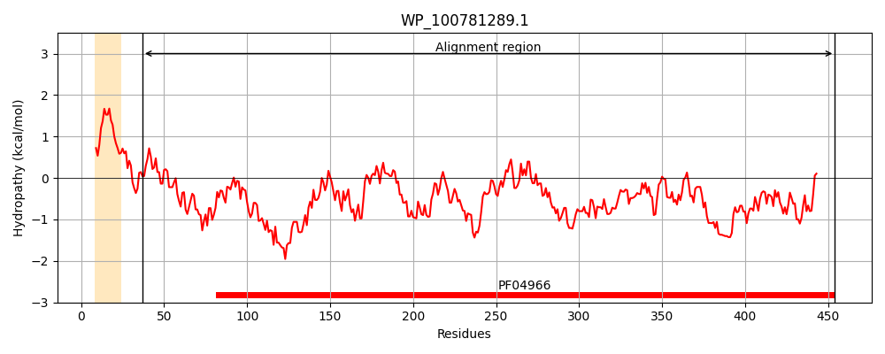
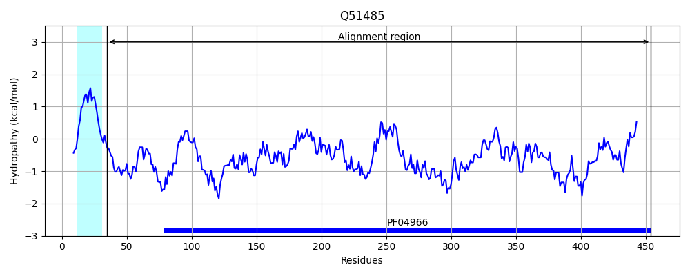
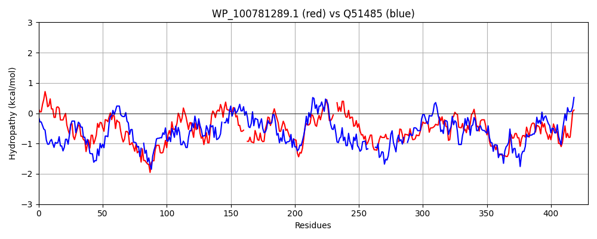

Hit Accession: Q51485
Hit TCID: 1.B.19.1.1
Hit Description: gnl|BL_ORD_ID|13930 gnl|TC-DB|Q51485|1.B.19.1.1 Porin B precursor (Outer membrane protein D1) (Glucose porin) - Pseudomonas aeruginosa.
Mach Len: 429
e:0.000000
Query TMS Count : 1
Hit TMS Count: 1
TMS-Overlap Score: 0.550000
Predicted Substrates:CHEBI:3473;cation, CHEBI:5448;glycerol, CHEBI:6686;D-mannitol, CHEBI:6668;maltose, CHEBI:5418;glucose, CHEBI:5172;fructose, CHEBI:25901;pentose
BLAST Alignment:
Score: 612 , Bit scores: 240 bits, E-value: 1.9e-74, Alignment length: 429, Percentage identity: 34
Query: 37 FEAGQQGLLGDMLGIRPILEENGFHYNLGYLNEMAYNAGGGYDHDKHLAYIDQVALTFTQDLERWTGIPDARLEGNIVNRNHDDNLTTKRLQDPRVSFNDLSQESWGGGSITRLGWLTFARSFDDRRLTWRIGMMNKVQTFDQIIPCDFQLLTQCGGKSAN--SLTWNNWNIHTWGTTLEYKLTPTVTLKGGVMEQNPQATARSHAWSGSTKGSKGILLPMEIETRPLMNG--LPGAYNLGVVWTNAPQTDLYSGKSGGAGATDPQGYAEHDST-------WFMYAGLNQQITRHADDPLRGMSVSLSGSLSDQRSNYIHSAVAASMRYRGLFDARPEDWIGFGLTWIDMSNHYASNQRYMNQLSGATDYNDPAYQPVAGHSLNGELYYRFRPVSWLELQPGLQYWHRPGGVAQTQDAWVVEWKTVVTF 454
F + +LGD G R L E G+ + L Y+ E A N GGYD DK Y DQ AL DLE+ G + + RN NL+ R+ DPR QE WG G RL L + + D L + G + + F+ PCDFQ L CG + N W NW + W ++Y P ++ G EQNP + + S G+KG LLP+E+ +P + LPG Y LG ++ A D+Y G PQG +D W++ A QQ+T H D RG+S+ + ++ D+ +N + + + Y+G FDARP+D IG G+ I +++ QR +NQ++G DY++P YQP+ N ELYY WL ++P LQY +PGGV + +A V K F
Sbjct: 35 FSPNSKWMLGDWGGKRTELLEKGYDFKLEYVGEAAANLDGGYDDDKTGRYTDQFALGVHMDLEKILGWKATEFQFTVTERN-GKNLSNDRIGDPRAGHISSVQEVWGRGQTWRLTQLWLKQQYFDGALDVKFGRFGEGEDFNSF-PCDFQNLAFCGSQVGNWAGSIWYNWPVSQWALRVKYNFAPDWYVQVGAYEQNPSNLETGNGFKMSGSGTKGALLPVELIWQPKVGAEQLPGEYRLGYYYSTAKADDVYDDVDG-----QPQGLTGNDFKSRGSKHGWWVVA--QQQVTSHNGDASRGLSLFANLTVHDKATNVVDNYQQLGVVYKGPFDARPKDDIGLGIARIHVNDDVKKRQRLVNQVNGIDDYDNPLYQPLQDTEYNAELYYGVHVTDWLTVRPNLQYIKQPGGVDEVDNALVAGIKIQTVF 454 | Protein Hydropathy Plots: |
|---|
|  |  |
Pairwise Alignment-Hydropathy Plot:
|
|---|
|  |